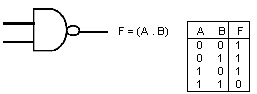

The principles of digital logic govern the operation of all modern computers. It uses the binary signals: 0-1 (or) high-low (or) true-false. The objective of this experiment is to become familiar with basic logic gates and their appropriate logic truth tables. These logic gates are then used to construct various simple logic circuits such as an adder, a latch, and a binary counter.
Basic Logic gates are AND, OR and NOT. Unniversal gates are NAND and NOR. Special Gate is XOR.
AND Gate: This digital gate has multi input and single output terminals. The output signal is high when all the inputs are high. Symbol and truth table are shown in Figure. Its IC number is 7408.
OR Gate: This digital gate has multi input and single output terminals. The output signal is high if atleast any one inputs become high. Symbol and truth table are shown in Figure. Its IC number is 7432.
NOT Gate: This digital gate has single input and single output terminals. The output signal is high when input is low. Its IC number is 7404.
NAND Gate: This digital gate has multi input and single output terminals. The output signal is always high if atleast any one of the input is low. Symbol and truth table are shown in Figure. Its IC number is 7400.

NOR Gate: This digital gate has multi input and single output terminals. The output signal is high when all the inputs becomes low. Symbol and truth table are shown in Figure. Its IC number is 7402.
XOR Gate: This digital gate has two inputs and single output terminals. The output signal is high when both the inputs are not same. Symbol and truth table are shown in Figure. Its IC number is 7486.